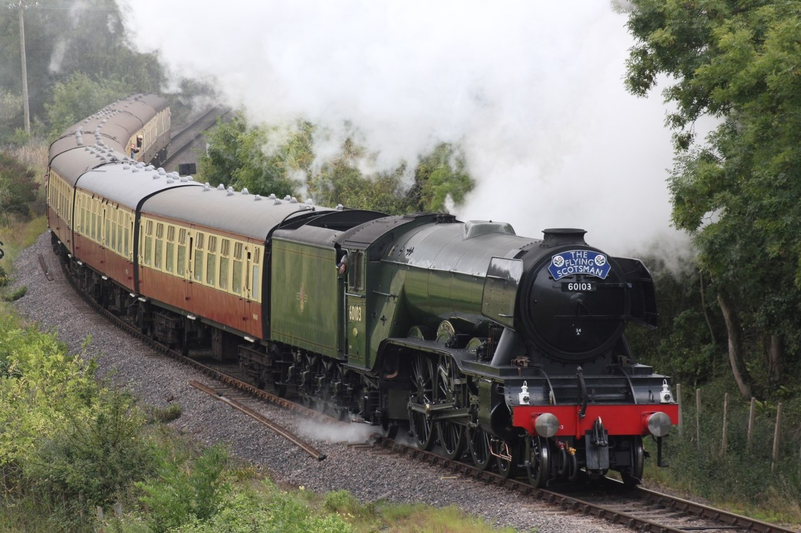
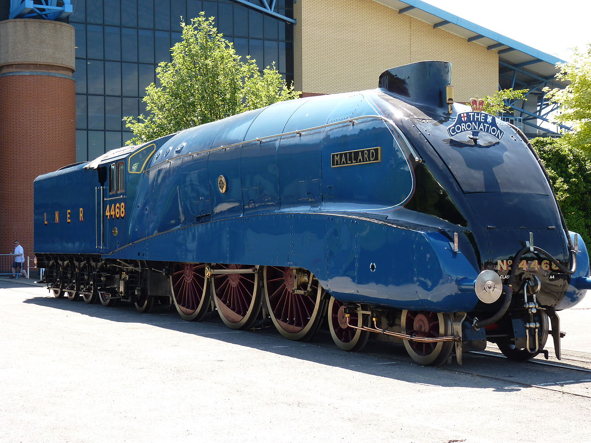

Parna (klipna) mašina, ili parni stroj (parostroj) predstavlja motor koji transformiše toplotnu energiju
vodene pare u rad, najčešće rotaciono kretanje. Spada u grupu klipnih toplotnih motora sa spoljašnjim sagorevanjem. Parne
mašine su se koristile kao pogon pumpi, parnih lokomotiva, parobroda i parnih traktora, te su bile temelj industrijske
revolucije.
Parna (klipna) mašina, ili parni stroj (parostroj) predstavlja motor koji transformiše toplotnu energiju
vodene pare u rad, najčešće rotaciono kretanje. Spada u grupu klipnih toplotnih motora sa spoljašnjim sagorevanjem. Parne
mašine su se koristile kao pogon pumpi, parnih lokomotiva, parobroda i parnih traktora, te su bile temelj industrijske
revolucije.
Ove lokomotive koriste za gorivo neki zapaljiv čvrst materijal, obično je to ugalj, drvo ili koks. a radi dobijanja vodene pare u kotlu, koja pod pritiskom vrši mehanički rad, odnosno okreće točkove. Čvrsto gorivo i zalihe vode se prenose sa lokomotivom, na samoj lokomotivi ili na vagonima koje vuče za sobom.
Parne lokomotive su prvo razvijene u Velikoj Britaniji tokom ranog 19. veka i dominirale su železničkim prevozom do sredine 20. veka. Prvu parnu lokomotivu izradio je Ričard Trevitik , koja je prvi put upotrebljena 21. februara 1804. godine, tri godine nakon što je 1801. napravio cestovnu lokomotivu. Prva komercijalo uspešna parna lokomotiva nastala je 1812-13 zaslugom Džona Blenkinsopa. [1] Džordž Stivenson i kompanija njegovog sina Roberta su proizveli Lokomotivu Br. 1, koja je bila prva lokomotiva za prevoz putnika na javnoj železničkoj liniji, Stokton i Darlington železnice 1825. godine. [2] Džordž je isto tako izgradio prvu međugradsku železničku liniju na svetu sa upotrebom lokomotiva, Liverpul i Mančester železnica, koja je otvorena 1830. godine. Stivenson je osnovao svoju kompaniju kao istaknuti graditelj parnih lokomotiva za železnice u Ujedinjenom Kraljevstvu, Sjedinjenim Državama i većem delu Evrope. [3]
U 20. veku, glavni mašinski inženjer Londonske i severoistočne železnice (LNER) Najdžel Gresli dizajnirao je više poznatih lokomotiva, uključujući Letećeg Škotlanđanina,  LNER Class A3 4472 Flying Scotsman je parna lokomotiva napravljena 1923. godine. Konstruisao ju je Najdžel Gresli. Korišćena je za ekspresne međugradske vozove, posebno na liniji London - Edinburg zbog koje je i naz-vana Leteći Škotlanđanin... prvu parnu lokomotivu koja se zvanično kretala brzinom preko 100 mph u putničkom servisu, i LNER Class A4 4468 Mallard,  LNER Class A4 4468 Mallard je parna lokomoti-va napravljena 1938. godine u fabrici Doncaster Works u Engleskoj. Drži zvanični svetski rekord u brzini kada su u pitanju parne lokomotive, koji iznosi 126 milja na sat (203 km/h)... koja drži rekord najbrže parne lokomotive na svetu (126 mph). [4]
Od 1920-ih su postepeno zamenjivane dizel i električnim lokomotivama, uz postepenu konverziju koloseka za upotrebu električnog i dizel pogona počevši od kraja 1930-ih. Većina parnih lokomotiva je povučena iz redovne službe di 1980-ih, mada se nekoliko njih i dalje koristi na turističkim linijama.
- ↑ 1 „John Blenkinsop - English inventor”.
- ↑ 2 Kirby, Maurice W. (2002). The Origins of Railway Enterprise: The Stockton and Darlington Railway 1821–1863. Cambridge University Press. ISBN 978-0-521-89280-3.
- ↑ 3 Ellis, Hamilton (1968). The Pictorial Encyclopedia of Railways. pp. 24-30. Hamlyn Publishing Group.
- ↑ 4 "Magnificent Mallard: World's fastest steam locomotive". BBC. 17 February 2018